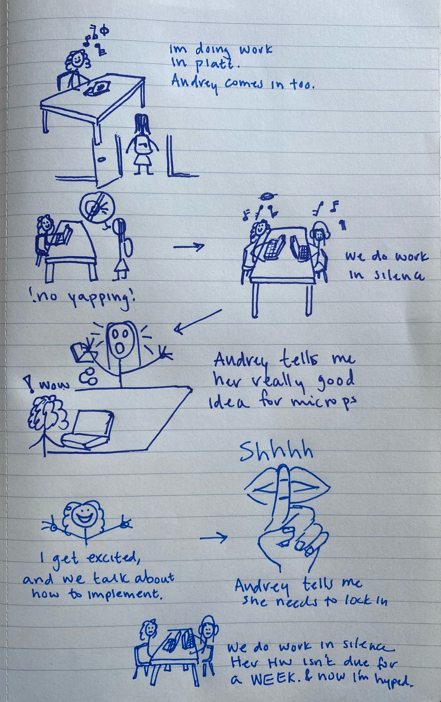
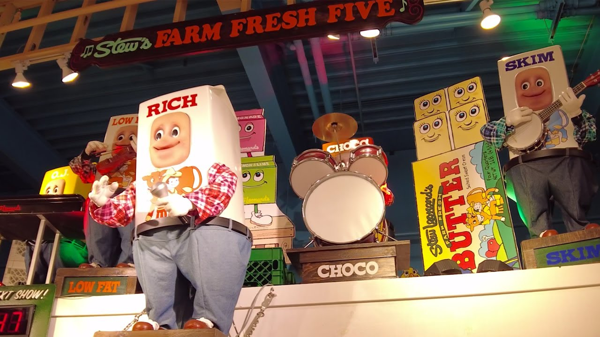
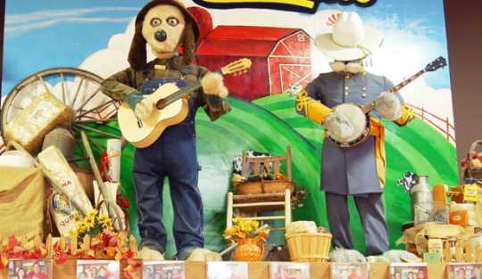
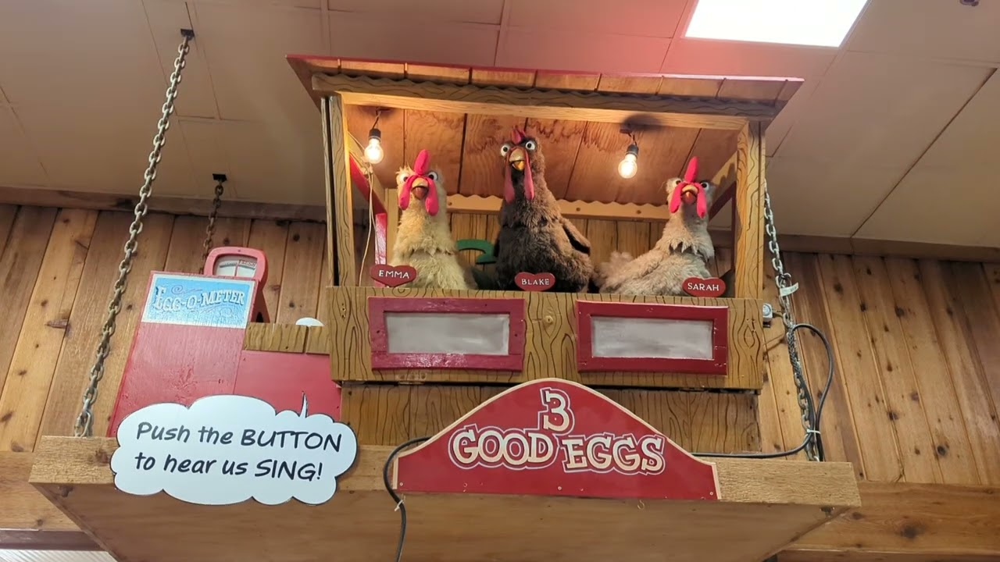
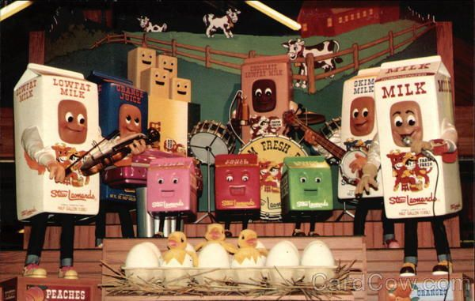
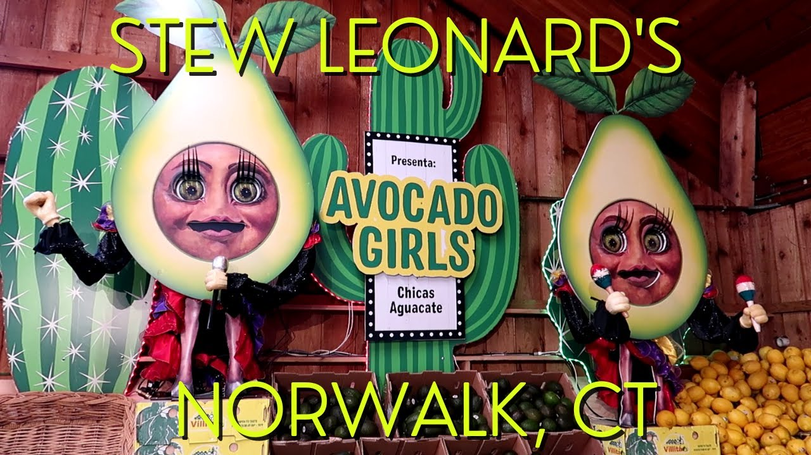
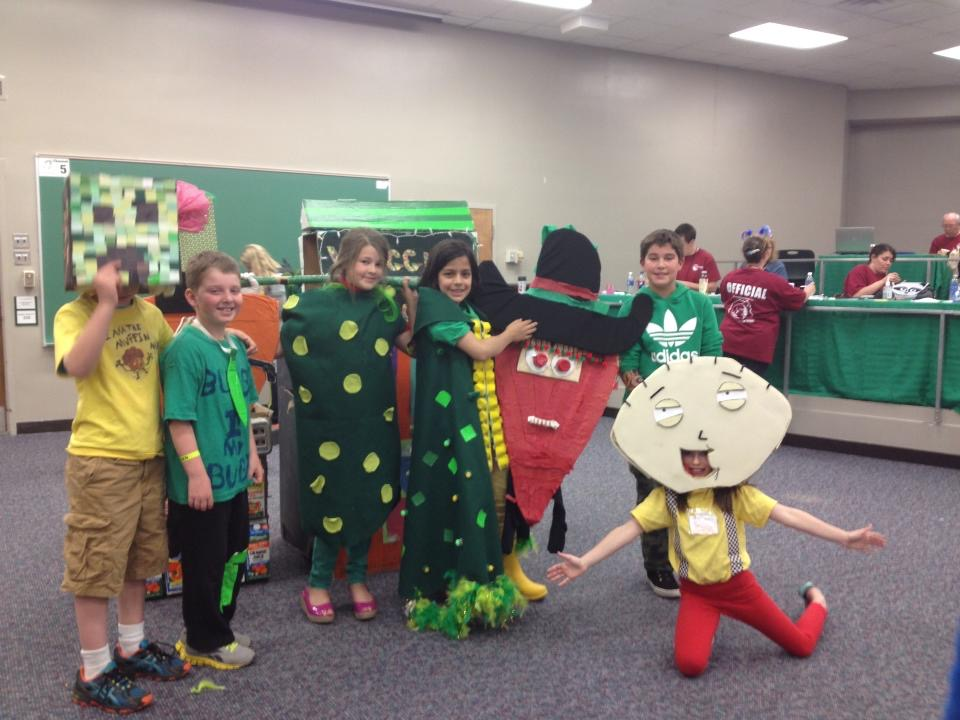
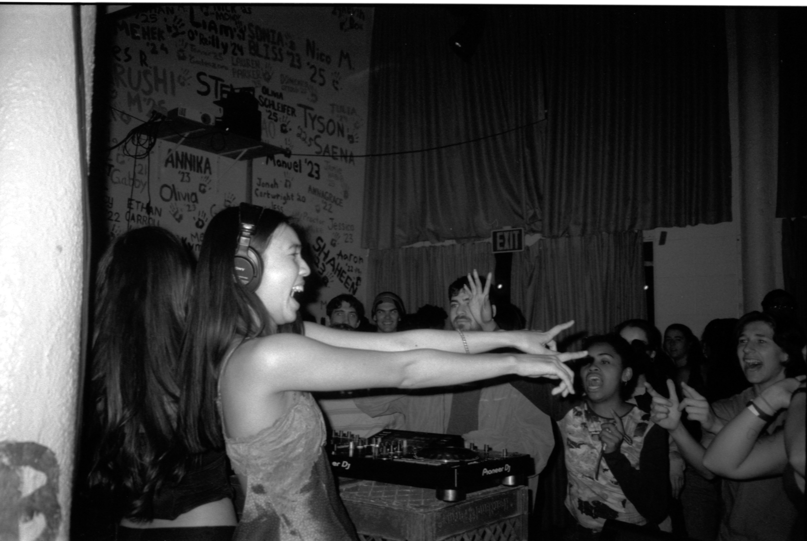
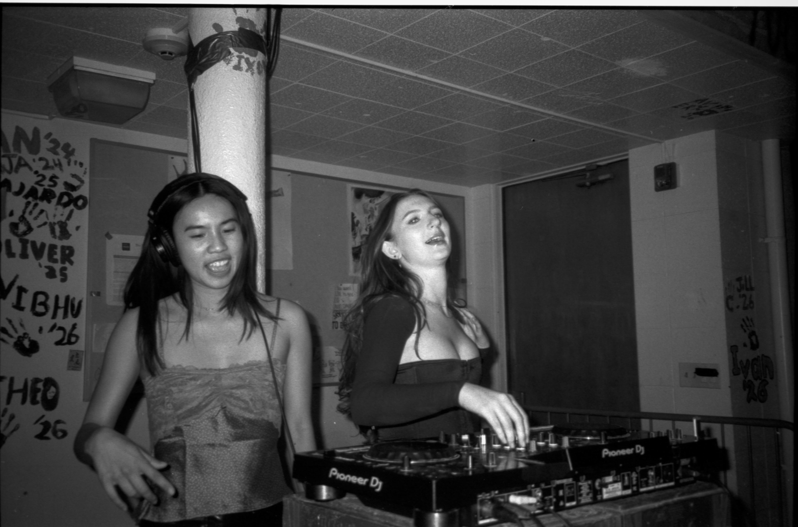
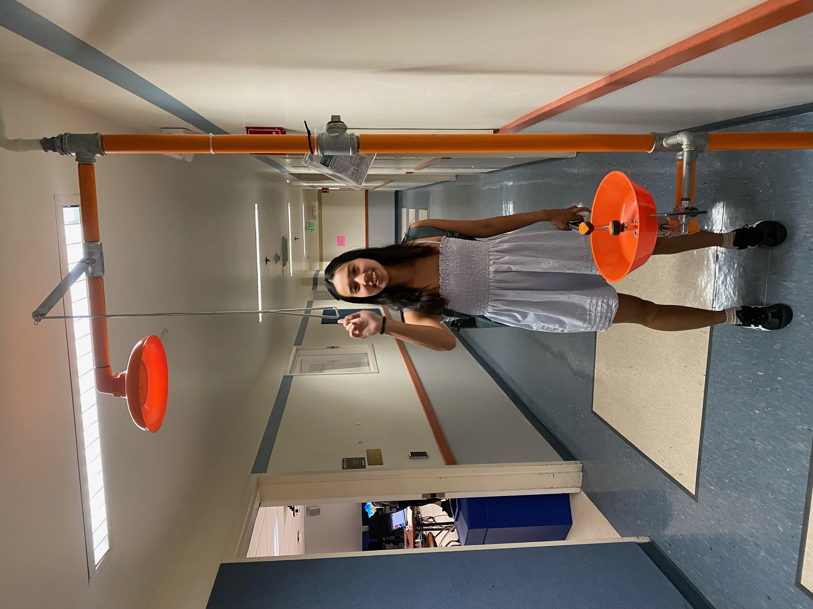

Best Project Idea Ever??
Let me paint a picture…
After wrapping up the digital audio lab, I was sitting in Platt, doing my other (non-mircoP) homework. Then Audrey walks in, also to do her own homework. I convince her to sit with me, even though she says she can’t afford to yap. So I tell her, that’s okay, we’ll listen to our own music. But then SHE starts yapping first, and causually drops the best potential final project idea. Then, after getting me all hyped up with a good idea, she rushed to put back on her headphones to work on the 83 she doesn’t have due for over a week. (She’s as biased as an LM386)
I’ve made a super realistic reenactment of what happened:

I’ll explain the idea in a sec. But first, let me provide some context. My friends and I have been brainstorming project ideas since we registered for the course, often sending photos or texts when an idea arises. Like over the summer, anything cool that we saw or a fun idea would warrant a text: an automated pasta machine, a jetpack like the one in Spy Kids, a thermal printer photobooth, a self-balancing platform to hold a ball, a pong robot, battle bots, etc.
Up until Audrey shared her magical idea, my top idea was creating an animatron, like the ones that they have at Stew Leonard’s. For context, Stew Leonard’s is “The World’s Largest Dairy Store,” with seven supermarkets based in the Northeast, with the FIRST and BIGGEST location based in Norwalk, Connecticut (My Home Town!). Stew Leonard’s is as much as a grocery store as a riveting, carnival-esque experience. As you walk through the store, they have animatrons that will swing and sing to you. They also had the cheapest milk and egg prices, and is located on the way home from my swim practice, so I frequented the store often growing up.
In case you are having problems visualizing this, here are some photos and videos. My favorite is the Milk Carton Band. When I was a kid, I would race my brothers to press the button first.
The Animatrons of Stew Leonards





Also, side note about Stew Leonards: When I was was in 3rd grade I was in Oddessy of the Mind, where other kids and I made a seven minute skit to perform, with homemade props and script. Our play was heavily based on Stew’s (they gave us empty cartons for props). We won the regional competition, so they gave us a behind-the-scenes tour of Stew Leonards, (we saw the milk and bread factory), and my photo was on their billboard for a week!

Therefore, for the final project I wanted to create an interactive animatron, that could do different tricks based on user input. Maybe we could even donate it to the store. However, this didn’t feel like a true microPs project.
Here’s where Audrey’s idea comes to the rescue. Let’s jump back to my conversation in Platt, where we had just finished “Lab 4: Digital Audio.” Audrey brings up the best idea.
She suggests: “What if we made a DJ deck”
Boom, this was an idea that finally clicked.
To provide some context, Audrey learned how to DJ last semester with one of her Scripps friends, and it has been a huge boost for our friendship. She has performed for 15 minutes in a 1C, and the first 30 minutes of TWO 5C. I’m her biggest fan.
Photos of Audrey in Her Element



Over this past summer, we decided that we would both learn how to DJ (we were both in the Bay). She got a small DJ deck, and I had a deck from when a coworker left her’s at my house years ago.
Unfortunately, over the summer we realized that our true passions did not lie in DJing. I do have a new found respect for all DJs tho.
Nonetheless, we both thing DJing is cool, and have fun doing really bad transitions together.
Back to the idea…
So, when Audrey suggested this idea, we were both super into it. We could use potentiometers to act as the faders, we can implement low pass and high pass filters, and we can alter the duration and pitch of a song to change the tempo.
Overall, it’s something we are excited about – and I’m curious to see if and how this will transform into a final project.
If we do end up pursuing this path, I want to convince our Linde president friends to let us DJ for the first few minutes of their 5C using our MicroPs board. Not sure how we will be able to handle the current required to go into 5 different speakers, but it’s a cool idea.
